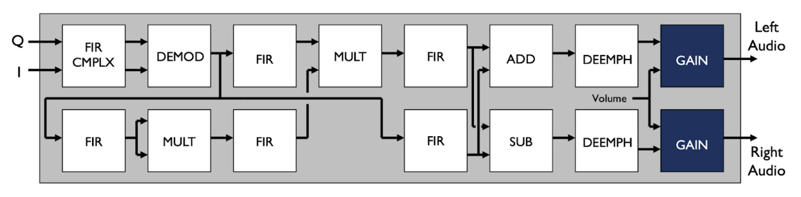
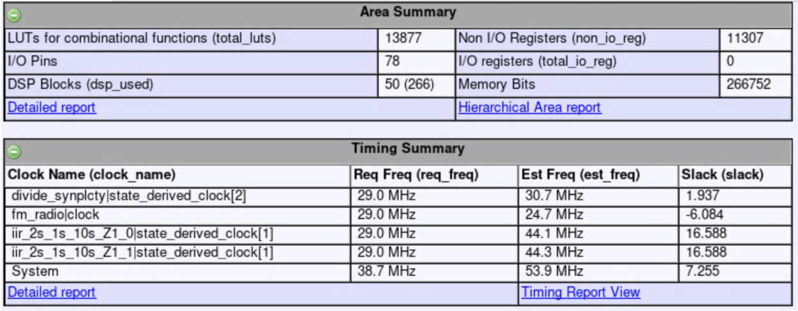

FM-Radio
The FPGA-Based FM Radio was created as a final project for my Digital Systems Designs w/ FPGAs class and as the name suggests was an implementation of an FM Radio’s system architecture onboard an FPGA. The input to the system were sinusoidal I and Q signals, and the output was audio data pertaining to the left and right channels.
The general process for this project is as follows:
- Parse the provided data from our professor using C. The initial data file provided was too large so we had to implement a parsing algorithm that would split the data into chunks to allow for fast processing.
- Create FPGA modules based on the provided FM Radio architecture.
- Created SystemVerilog code and validated using data from the initial C code and using Universal Verification Methodology in ModelSim.
- Verified the ability to synthesize using Synplify Premier

FM radio architecture

Block diagram of IIR filter implemented in SystemVerilog

Synplify Premier synthesis results of the FM radio